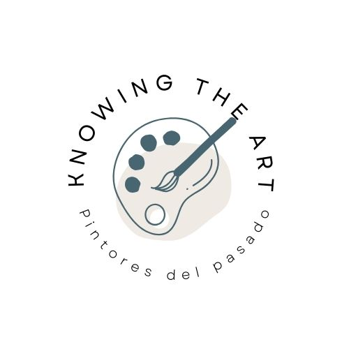
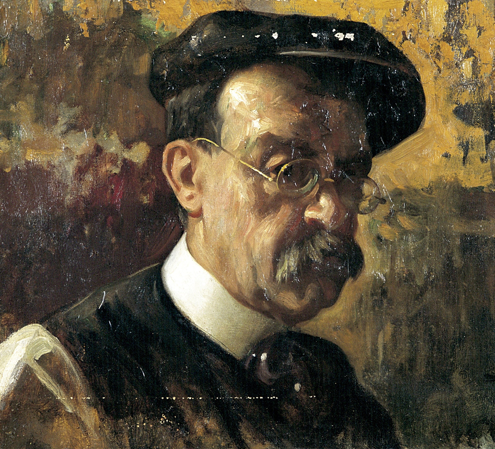

Teófilo Castillo Guas
Destacó por su técnica impresionista, convirtiéndolo en uno de los pintores peruanos más importantes del siglo XIX EN la Escuela Nacional de Bellas Artes de Lima.
Más información aquí
Teodoro Núñez Ureta
Considerado el muralista más importante y prolífico de Perú, además de un extraordinario acuarelista.
Más información aquí